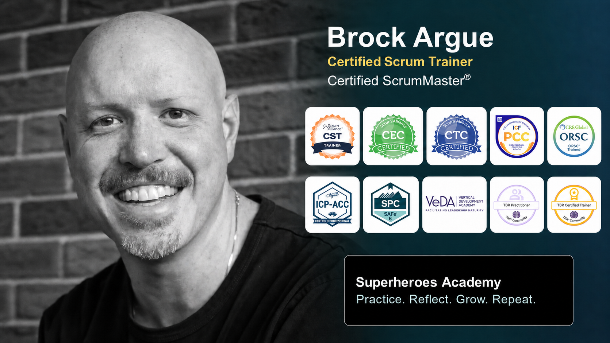

Superheroes Academy | Live-online CSM certification program
Certified ScrumMaster® with Brock Argue
Do not just memorize Scrum. Experience how it works. Form a Scrum Team, build a product through three Sprints, and leave ready to make Scrum more useful in the real world.
Course Summary
This is a practical, two-day, live-online Certified ScrumMaster course for people who want more than a slide marathon. You will work in a Scrum Team, make real decisions under time pressure, build and inspect a product, adapt your plan, and reflect on what helped or hindered the team.
Along the way, Brock connects the Scrum framework to the human work behind it: creating clarity, facilitating useful conversations, supporting self-management, responding to impediments, and helping teams learn from experience.
Who This Course Is For
New and aspiring Scrum Masters
Build a strong foundation and practice the accountability before or while stepping into the role.
Scrum Team members
Develop a shared understanding of Scrum accountabilities, events, artifacts, commitments, and empiricism.
Leaders and change agents
Learn how Scrum changes decision-making, team design, leadership, and the way organizations respond to complexity.
No prior Scrum experience or certification is required.
What You Will Learn and Practice
Scrum foundations and empiricism
Define Scrum, connect it to the Agile Manifesto, and experience transparency, inspection, and adaptation.
Accountabilities and collaboration
Explore how the Product Owner, Developers, and Scrum Master work together to create valuable Increments.
Events, artifacts, and commitments
Understand the purpose and boundaries of Scrum's events, artifacts, Product Goal, Sprint Goal, and Definition of Done.
A complete Scrum simulation
Perform Sprint Planning, Sprint Review, and Sprint Retrospective across three Sprints while building a product with your team.
Quality and technical debt
See the impact of an unclear Definition of Done, then improve quality and reduce surprises in later Sprints.
Facilitation and group decisions
Practice techniques that help teams form, make decisions, surface different perspectives, and move forward together.
Product Backlog work
Explore Product Backlog refinement, stakeholder collaboration, Product Owner authority, and the role of the Sprint Goal.
Impediments and true leadership
Analyze organizational impediments and distinguish when a Scrum Master facilitates, teaches, mentors, or coaches.
How the Learning Works
The course uses Zoom, Mural, breakout teams, short teaching segments, games, simulations, structured reflection, and frequent debriefs. Activities include Agile Manifesto Bingo, an empiricism simulation, Scrum learning centers, an accountabilities card sort, self-organized team formation, Scrum Events Jeopardy, a multi-Sprint comic-book simulation, an artifacts myth-or-fact challenge, impediment analysis, and a final synthesis activity.
The design moves repeatedly through experience, reflection, explanation, and another chance to apply what you learned. That rhythm helps Scrum become something you can reason about and use—not just terminology to remember for a test.
Two-Day Course Flow
Day 1 — Build the foundation
- Scrum, the Agile Manifesto, and empiricism
- Scrum accountabilities and values
- Team formation and working agreements
- Scrum events
- Sprint 1 of the product simulation
- Reflection and questions
Day 2 — Apply and integrate
- Definition of Done and technical debt
- Sprints 2 and 3 of the simulation
- Scrum artifacts and commitments
- Organizational impediments
- True leaders who serve
- Exam guidance, resources, and next steps
What Is Included
Certification support
- Scrum Alliance CSM exam fee
- Practice test
- One-on-one tutoring support until you pass
- Two-year Scrum Alliance membership after certification
Learning and community
- 100% live instruction
- Exclusive course resources
- PMI Professional Development Units
- Two-year Comparative Agility assessment membership
- Lifetime access to the Superheroes Academy Slack community
Choose Your Learning Plan
Core certification experience
CSM Signature
$550 CAD
- Live CSM course and certification support
- Practice test, resources, memberships, PDUs, and community
Add AI and personal support
CSM AI Plus
$750 CAD
- Everything in Signature
- Introduction to AI for Agilists resource
- Six months of Max Good AI Coach access
- 30 minutes of one-on-one consulting, career, or résumé support
Limited-time offer
CSM AI Accelerator Pro
$750 CAD $925 CAD
- Everything in AI Plus
- AI for Scrum Masters or another eligible on-demand microcredential
- $50 discount on your next A-CSM course
- 60 minutes of one-on-one career and résumé support
Prices are charged in Canadian dollars. Availability and promotional pricing may vary by course date.
CSM Exam
After completing the approved course, you will receive access to the online Scrum Alliance CSM exam. The exam has 50 multiple-choice questions, a 60-minute time limit, and a passing score of 74%. Scrum Alliance includes two attempts when taken within 90 days of the course.
Meet Your Trainer
Brock Argue is a Scrum Alliance Certified Scrum Trainer, Certified Enterprise Coach, and Certified Team Coach, as well as an ICF Professional Certified Coach and ORSC-trained systems coach. He brings more than two decades of experience in software development, leadership, facilitation, training, and organizational coaching.
Over the past two decades, Brock has supported agile journeys at organizations including the Federal Reserve Bank of New York, WestJet Airlines, ADP, Suncor Energy, Benevity, and the Calgary Public Library. As Co-founder of Superheroes Academy, he brings a grounded, human-centered approach to coaching, mentoring, and certification programs.
His style is warm, direct, and deeply practical. Brock cares about the work behind the buzzwords: helping people notice what is happening, tell the truth skillfully, learn from experience, and make one better choice at a time.
Ready to experience Scrum?
Choose the course date and learning plan that fit you best.
Explore CSM registration options